Demo text flows through payload, verify route, fallback extraction, rule graph, and result cards.
Product direction
TTB COLA Label Verifier.
AI-powered label verification tool for TTB compliance agents. Upload or select a label image and application data; the system checks that they match and meet COLA requirements under 27 CFR Part 5.
Open clickable package flow or edit the flow JSON.
Scope of this deployment: distilled spirits first. Wine and malt beverages use common field matching plus limited alcohol-content exception handling; deeper commodity-specific rules are staged.
The compliance engine surfaces advisories for four TTB rule areas:
- Bottle size: standards of fill under 27 CFR 5.203.
- State of distillation: origin disclosure for straight designations under 27 CFR 5.36.
- Statement of composition: required for liqueurs, cordials, and specialty or flavored products under 27 CFR 5.39.
- Non-standard production statements: terms like small batch, handcrafted, estate under 27 CFR 5.36.
Live demo: cola.maxpetrusenko.com. Requirement trace: REQUIREMENTS_TRACE.md.
5 secAdoption threshold from discovery.
QueueMain screen starts from mock COLA rows.
0Raw image bytes stored by default.
1
Extractor reads
AI reads label evidence only. Expected facts stay in structured COLA/JSON data.
2
Rules decide
Deterministic checks compare observed evidence to expected facts and TTB source references.
3
Reviewer closes
Accept, request correction, override with reason, or SME review.
ADRs added
Blind extraction, deterministic rules, human review, tool surface, fixture benchmarks, and deferred production scope.
Fixtures built
Generator, nine-case manifest, degraded-photo generator, and benchmark harnesses now turn research examples into repeatable checks.
Reviewer UX built
The current screen supports demo, fixture, upload, text fallback, small batch review, image-quality gating, decision counts, and exportable packets.
Core decision
Build a controlled discrepancy cockpit, not an auto approver.
The model reads label evidence. Deterministic rules compare it. The reviewer owns the final decision.
| Option | Upside | Risk | Verdict |
|---|---|---|---|
| Single label checker | Fastest to implement. | Ignores the importer batch spike and does not feel like an agent. | Reject |
| Full compliance platform | Impressive long term story. | Auth, retention, queueing, COLA integration, and Teams workflow swamp the take home. | Reject |
| Review cockpit | Targets routine matching, shows receipts, keeps judgment human, leaves clean growth path. | Requires tight scope discipline. | Choose |
Evidence cards
Expected, observed, status, rationale, and requirement reference for every check.
Human disposition
Accept, request correction, override with reason, or SME review.
Production queue
Keep V1 cap. Document that 200 to 300 label spikes need worker backed batch processing.
Accepted build decisions
Blind extraction
The extractor receives label image/text evidence only. Expected brand, class, ABV, contents, origin, and bottler facts enter later in deterministic rules.
Rules own findings
TypeScript checks produce pass, warning, fail, or needs-review results with expected values, observed values, requirement references, rationale, and guidance.
No fake production
Auth, RBAC, storage, retention, COLAs integration, and compliance-grade audit logs stay deferred. The prototype remains stateless and export-oriented.
Similar apps and what they teach us
The closest products do not fully automate approval. They create a source of truth, upload artwork, compare artwork to specs or rules, highlight differences, then route a human review.
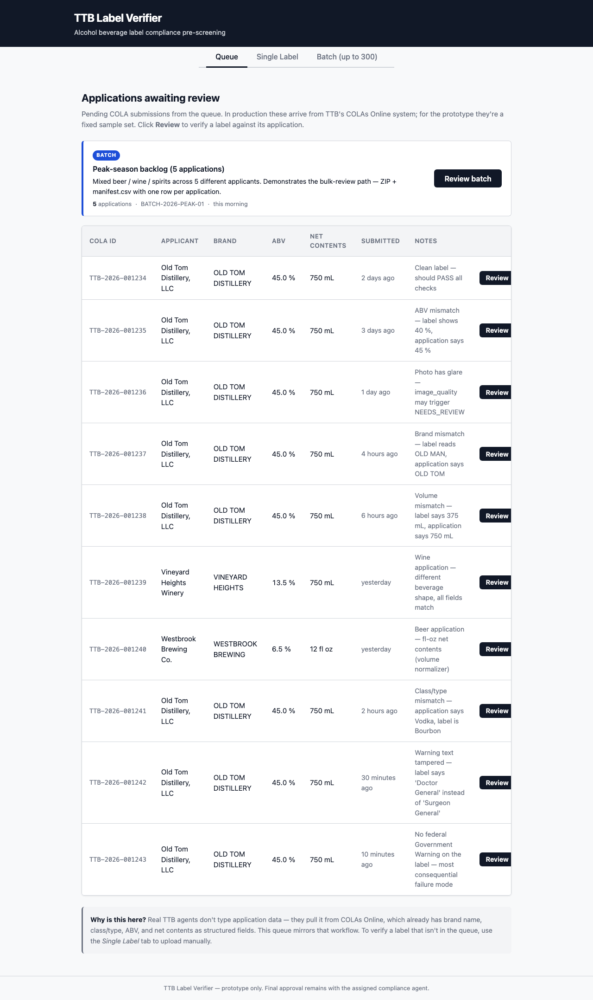
Strongest product signal: default screen is a COLA-style application queue. Borrow queue-first review, with Single Label and Batch as secondary paths.
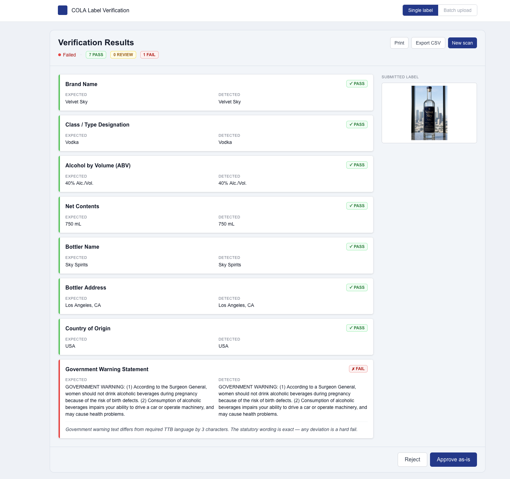
Best fixture/result signal: generated image + JSON pairs and field-level PASS/FAIL/REVIEW rows. Borrow this for demos and evals.
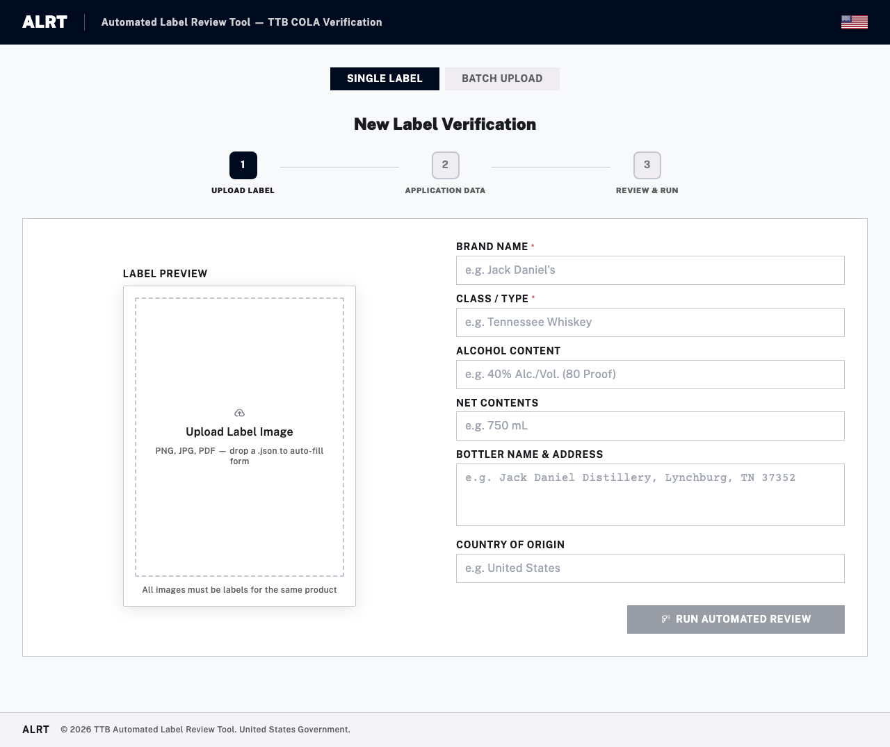
Best architecture signal: blind extraction. AI reads only label artwork; deterministic code compares to application facts.
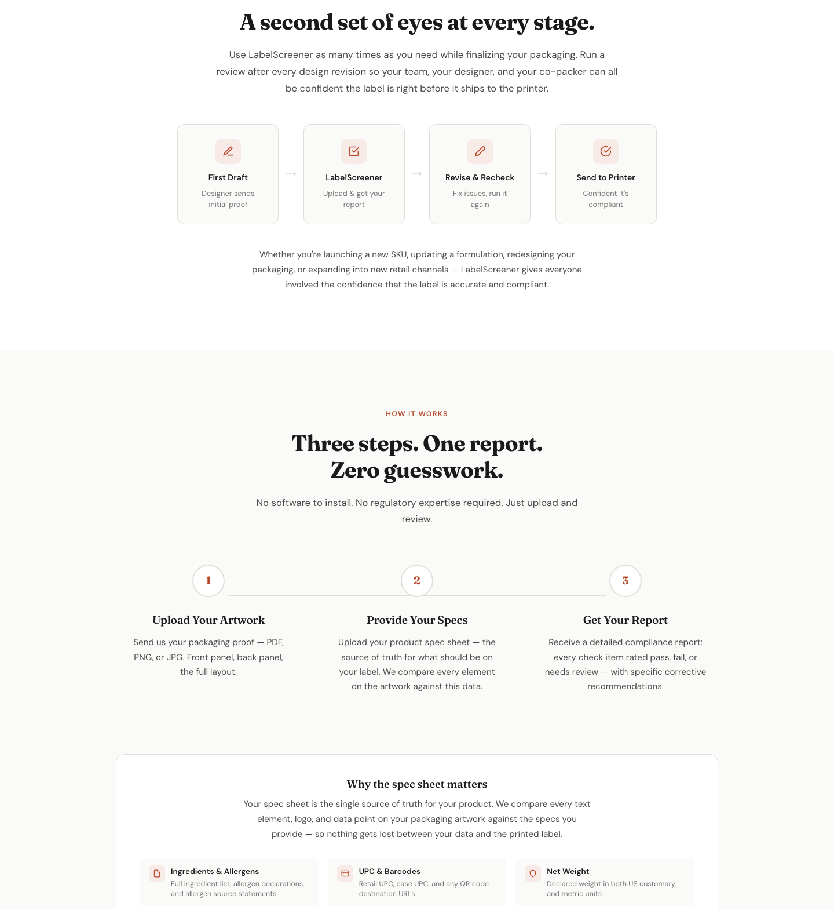
Shows the closest general flow: upload artwork, provide specs, then get a compliance report. Borrow source-facts plus artwork as the core mental model.
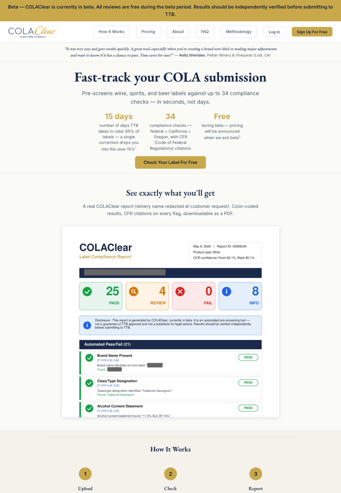
Shows the alcohol-specific version: upload label artwork, run checks, then return pass/review/fail/info counts with CFR citations.
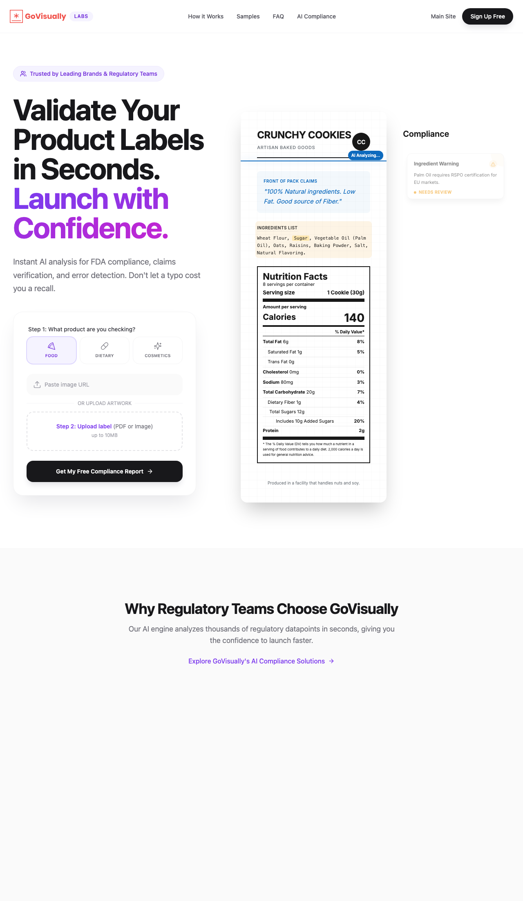
Shows how product type, upload control, artwork preview, and an issue card can fit together on the first screen.
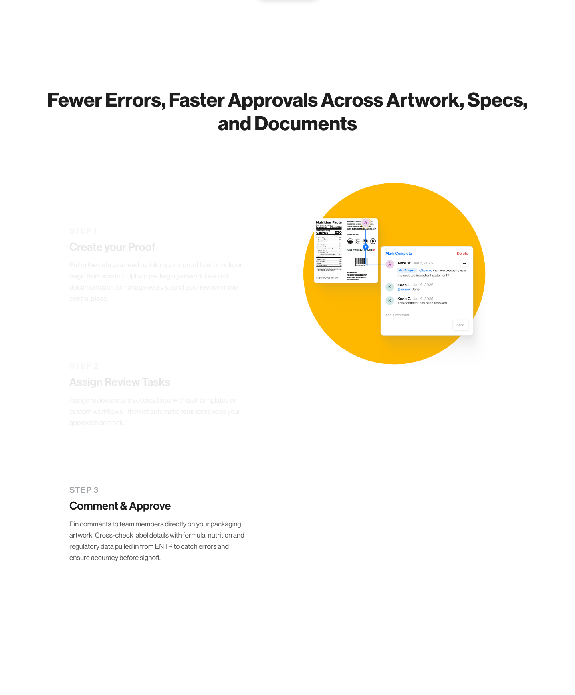
Shows what happens after upload: proof creation, assigned review, comments, approval, and traceability.
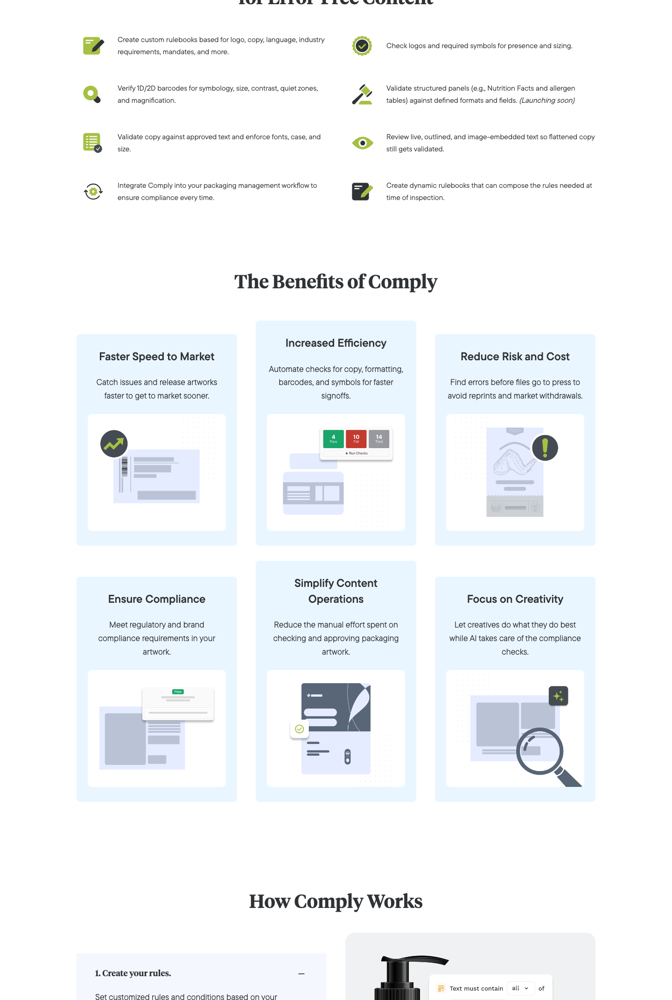
Shows reusable rulebooks and artwork mismatch review. Borrow checks tied directly to visible evidence.
| Reference | What it does | Lesson for LabelCheck |
|---|---|---|
| Raq TTB Label Verifier | Mock COLA queue, single-label fallback, batch tab with one source record per label. | Make queue-first the main flow. Do not make typing facts the primary experience. |
| fsyeddev TTB Label | Generated image + JSON fixture corpus, JSON/CSV import, field-level result cards. | Use fixtures from /evals/fixtures/spirits-generated-canonical to power demos and tests. |
| PlntGoblin ALRT | Blind extraction followed by deterministic comparison and human override. | Do not show expected facts to AI during label extraction. |
| TTB COLAs Online | Official submission system for COLA applications, status tracking, application detail, and label image upload. | Our prototype should mirror the mental model: source application facts plus uploaded label images. It should not replace COLAs. |
| LabelScreener | Uploads packaging artwork and product specs, then returns pass/fail/needs-review checks against data and regulations. | Spec sheet equals source of truth. For us, the source of truth is the COLA/application record. |
| Esko Comply | Runs AI-assisted artwork compliance checks for copy, formatting, symbols, barcodes, and rulebooks inside an artwork workflow. | Rules should be reusable, source backed, and visually tied to evidence on the artwork. |
| ManageArtworks ComplAi | Scans packaging elements against regulatory profiles and flags deviations for collaborative review. | Use profiles: spirits, wine, malt beverage, imported, domestic. |
| ENTR Proofing | Links artwork proofing to formula/regulatory data, comments, approvals, tasks, and traceability. | V1 can stay single screen, but final disposition and export are essential. |
| Truli / LabelValidator | AI label and claims review with citations and suggested fixes for food, beverage, supplement, or cosmetic labels. | Reviewer trust comes from flagged issues plus regulatory citations, not a generic score. |
Product pattern: pick/import application row + attach label artwork + blind extract label evidence + deterministic checks + human signs off. LabelCheck is that pattern narrowed to alcohol label application review.
What the app compares
Default comparison: structured application facts versus each submitted label image or text panel. Not label versus label unless we add an explicit cross-panel consistency check.
Normal case
Reviewer opens one COLA row or JSON fixture and one label image. The app extracts observed label values and compares them to expected facts.
Same SKU
Reviewer attaches front and back labels to the same source row. The app combines evidence across panels: brand may be front, warning may be back.
Batch case
Reviewer drops image files or a folder onto the label area, or uses Upload to select up to 300 label images. Browser and CLI batches chunk work into 25-label API requests. Each image becomes an independent result row tied to source application facts.
Where pictures come from
Prototype path
Use fixture pairs from
/evals/fixtures/spirits-generated-canonical: label image, JSON form data, and expected behavior.Real TTB path
Label images already arrive as part of a COLA application. A future integration would prefill source facts and attached images from COLAs.
Camera path
Camera captures one label at a time through browser camera permission on localhost or HTTPS. Desktop upload and folder drop remain the batch paths.
Fallback path
If no queue row exists, reviewer imports JSON/CSV or manually enters fields. If model calls are blocked, reviewer pastes OCR/text.
Expected source: Brand Name: OLD TOM DISTILLERY Class/Type: Kentucky Straight Bourbon Whiskey Alcohol: 45% Alc./Vol. (90 Proof) Net Contents: 750 mL Observed label evidence: "OLD TOM DISTILLERY" "Kentucky Straight Bourbon Whiskey" "45% Alc./Vol. (90 Proof)" "750 mL" "GOVERNMENT WARNING: ..." Result: each check = pass / warning / needs_review / fail reviewer disposition = accept / correction / override / SME review
Architecture
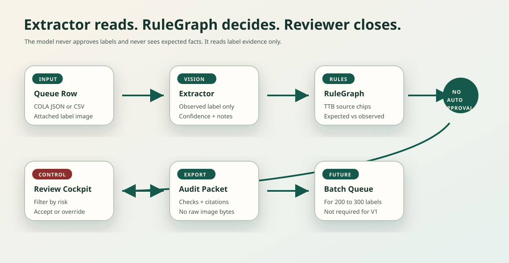
Current repo fit
src/app/api/verify/route.ts already separates extraction from deterministic checks. src/lib/rules.ts is the right place to grow source backed rule logic.
Trust boundary
Model output is low trust. It can provide text, fields, confidence, and notes. It cannot produce final compliance authority.
API surface
/api/v1/health, /api/v1/extract, /api/v1/verify, and /api/v1/export are the machine-facing contract. UI scraping is not the integration path.
Fixture surface
scripts/html-fixture-generator.mjs writes reproducible SVG, HTML, JSON, and manifest files under public/evals/fixtures/spirits-rendered-regression.
Benchmark surface
src/lib/htmlFixtureBenchmark.ts and src/lib/degradedFixtureBenchmark.ts run fixture ground truth through the local rule engine and report gaps without a model API.
Browser -> POST /api/verify -> Extractor -> RuleGraph -> Review result
|
+-> text-only fallback when API key or network is unavailable
Clickable package flow
This is the DaveJ-style map: pick an action, then see the app packages, components, routes, libraries, fixtures, and services that participate in that action.
Fixture facts and fallback text produce a deterministic brand mismatch rejection.
Image data URL reaches the configured vision provider, then returns observed evidence to rules.
Missing key, missing image, bad JSON, or provider failure falls back to text parsing.
Multiple labels normalize into progressive chunks and return per-label result rows.
Zod rejects incomplete source facts before extraction or rules run.
GET health route proves the app can answer deploy or local smoke checks.
Lint, tests, and Next build validate the app before handoff.
The map is generated from JSON, not hard-coded flow markup.
Edit the flow JSON.
Reviewer journey
This is the product loop. It explains the human review sequence, while the map above explains the implementation path through the repo.
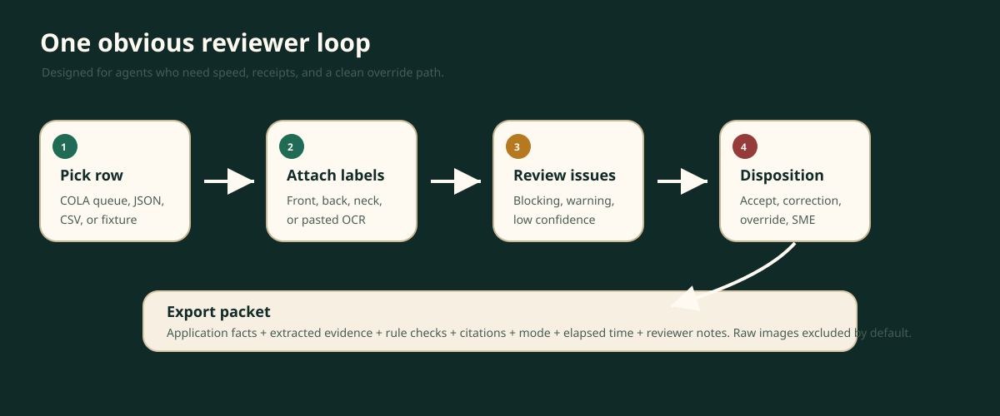
Pick queue row
Expected facts come from mock COLA row, JSON fixture, or CSV manifest.
Attach label image
AI extracts observed evidence from label artwork only. Expected facts are not sent to the extraction prompt.
Run verification
Server validates count, MIME type, payload size, and required fields before model calls.
Review grouped issues
Blocking failures, needs review, warnings, and clear labels are visible as separate buckets.
Close with disposition
The final output is human owned and exportable.
Design direction
The app design is the two-pane reviewer cockpit shown in the Product direction header: label/photo evidence on the left, application facts and review result on the right. Keep future screens close to that shape.
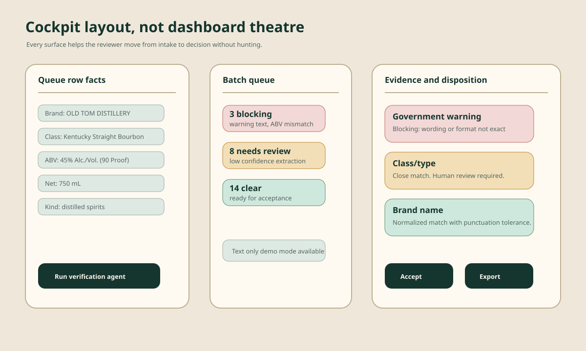
Queue left
Keep application facts visible and stable. No modal maze.
Batch center
Use filters and counts so reviewers attack failures first.
Evidence right
Show checks, source chips, and final disposition controls together.
Contract direction
The current contract now includes requirement references, severities, confidence gating, image-quality review paths, versioned API routes, reviewer disposition controls, CLI image/folder input, and export packets.
type VerificationCheck = {
id: string;
label: string;
status: "pass" | "warning" | "fail" | "needs_review";
severity: "blocking" | "review" | "info";
requirementRef: { id: string; label: string; url: string };
expected?: string;
observed?: string;
rationale: string;
};
type ReviewerDisposition = {
status: "accepted" | "request_correction" | "override" | "sme_review";
reasonCode?: string;
note?: string;
};
Backward compatible
Keep POST /api/verify. Add fields rather than replacing the route.
Batch truth
V1 supports up to 300 browser or CLI image labels through 25-label API chunks. Production importer spikes still need durable job IDs, server queue state, retry, and resume.
Build state and tests
Built from presearch
- Requirement ADRs under
docs/decisions. - Requirement references and severities on checks.
- Confidence and image-quality gates for poor label evidence.
- Batch summary and active label review in the UI.
- Export packet route without raw image bytes by default.
- Deterministic HTML/SVG fixture generator and committed fixture corpus.
- Degraded-photo benchmark generator for 500 local image-quality eval cases.
Regression coverage
- Perfect spirits label approves.
- Brand mismatch rejects.
- 45% ABV reconciles with 90 proof.
- Wrong warning blocks.
- Low confidence cannot approve cleanly.
- Blur, glare, low light, perspective skew, and tiny warning fixtures route to review or rejection.
Testing stance: rules first, route contract second, fixture benchmark third, UI smoke fourth. Keep vision tests mocked unless the task explicitly verifies model behavior. The degraded-photo benchmark proves image-quality gating; a live model-recognition claim uses
npm run eval:vision -- --limit 10 with API credentials.npm run fixtures:generate npm run fixtures:benchmark npm run fixtures:degrade npm run eval:degraded-fixtures npm run eval:vision -- --limit 10 npm run test npm run lint npm run build
Sources and provenance
- TTB health warning guidance: warning applies to alcohol beverages at 0.5 percent ABV or more; formatting includes separate placement, capital bold prefix, continuous statement, size and legibility rules.
- TTB distilled spirits labeling: mandatory label information includes brand, class/type, alcohol content, health warning, name/address, net contents, and import origin when applicable.
- TTB distilled spirits checklist: concrete checklist for matching brand/application data, same field of vision, ABV/proof, net contents, exact warning wording, and origin.
- TTB wine brand label guidance: brand, class/type, and appellation can be brand label requirements; other mandatory information may appear elsewhere.
- TTB malt beverage mandatory label guidance: source for malt beverage mandatory information and conditional alcohol/ingredient disclosures.
- TTB COLAs Online: official application, status, and label image upload workflow reference.
- LabelScreener: packaging artwork plus spec sheet comparison pattern.
- Esko Comply: AI-led artwork compliance checks with rulebooks and visual mismatch review.
- ManageArtworks ComplAi: configurable compliance profiles and collaborative review for packaging deviations.
- ENTR Proofing: proofing workflow tied to formula/regulatory data, comments, approvals, and traceability.
- Truli and LabelValidator: AI label review with citations and flagged issues.
- Thariq HTML artifact post: used for artifact structure: tabs, diagrams, images, richer density, and Markdown as support.
Fetched/reviewed on 2026-05-13. The local take home source is docs/Requirements-Take-Home Project_ AI-Powered Alcohol Label Verification App.docx.